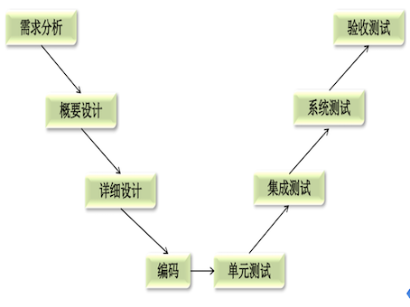
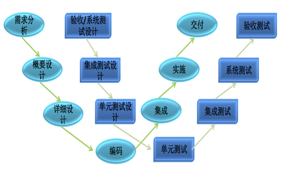

测试模型
1. 概述
软件测试和软件开发一样,都遵循软件工程原理,遵循管理学原理,所以理解好软件的开发模型会便于理解测试模型.
软件测试的一般流程:

我们发现一般的软件测试流程和软件开发的流程一样,但是这样的流程测试介入的较晚,对于前期重大的bug很难修复.所以测试的流程进行总结,总结出以下几个常用的测试模型:
- V模型
- W(双V)模型
- H模型
1.1 V模型

1.1.1 介绍
V模型和瀑布模型有一些共同的特性，V模型中的过程从左到右，描述了基本的开发 过程和测试行为。
单元测试：是模块测试，验证软件的基本组成单位的正确性，是白盒测试
集成测试：是模块间的测试，测试接口（软件各模块之间的接口和软件与硬件之间的接口）是否正确，是灰盒测试（白盒和黑盒结合)
系统测试：系统测试包括：冒烟测试 系统测试 回归测试
- 冒烟测试：主干流程测试，确认软件的基本功能正常，可以进行后续的测试工作
- 系统测试：是检测系统的功能、质量、性能能否满足系统的要求，包括功能、性能、界面、可靠性、兼容性等等，是黑盒测试
- 回归测试：修改了旧代码之后重新进行测试，确认修改后的代码没有引入新的错误或导致其他代码产生新的错误
验收测试：是确保软件的实现能否满足用户的需求或合同的要求
1.1.2 优缺点
优点:
- 每一个阶段都清晰明了、便于控制开发的每一个过程
- 既包含单元测试又饱含系统测试
缺点:
- 测试介入的较晚,对于前期的一些缺陷无从发现和修改
- 测试和开发串行
1.2. W模型
1.2.1 介绍
V模型的局限性在于没有明确地说明早期的测试,无法体现“尽早地和不断地进行软件测试” 的原则。在V模型中增加软件各开发阶段应同步进行的测试，演化为W 模型（如下图）。在模型中不难看出，开发是“V”，测试是与此并行的“V”。

W模型是V模型的发展，强调的是测试伴随着整个软件开发周期，而且测试的对象不仅仅是程序，需求、功能和设计同样要测试。测试与开发是同步进行的，从而有利于尽早地发现问题。
1.2.2 优缺点
优点
- 测试伴随软件的整个生命周期,例如,在需求分析结束后就可以进行需求分析测试、
- 测试于开发是并行独立进行
缺点
- 对需求和测试技术要求高
- 适用于大中型企业
1.3. H模型
1.3.1 简介

H模型中, 软件测试过程活动完全独立,贯穿于整个产品的周期,与其他流程并发地进行,某个测试点准备就绪时,就可以从测试准备阶段进行到测试执行阶段。软件测试可以尽早的进行,并且可以根据被测物的不同而分层次进行。
1.3.2 优缺点
优点:
开发的H模型揭示了软件测试除测试执行外，还有很多工作；
软件测试完全独立，贯穿整个生命周期，且与其他流程并发进行；
软件测试活动可以尽早准备、尽早执行，具有很强的灵活性；
缺点:
管理型要求高：由于模型很灵活，必须要定义清晰的规则和管理制度，否则测试过程将非常难以管理和控制；
技能要求高：H模型要求能够很好的定义每个迭代的规模，不能太大也不能太小；
测试就绪点分析困难：测试很多时候，你并不知道测试准备到什么时候是合适的，就绪点在哪里，就绪点的标准是什么，这就对后续的测试执行的启动带来很大困难；
2. 小结
在实际工作中应灵活的运用各种模型的优点.
V模型: 强调了在整个软件项目开发中需要经历的若干个测试级别，并与每一个开发级别对应；忽略了测试的对象不应该仅仅包括程序，没有明确指出对需求、设计的测试
W模型: 补充了V模型中忽略的内容，强调了测试计划等工作的先行和对系统需求和系统设计的测试；与V模型相同，没有对软件测试的流程进行说明
H模型: 强调测试是独立的，只要测试准备完成，就可以执行测试